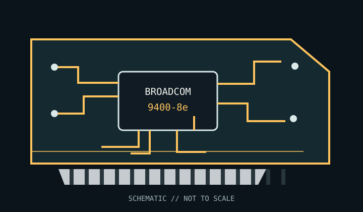

[ INDIVIDUAL COMPONENT // STORAGE / DISK I/O ]
Broadcom SAS 9400-8e
8 external lanes on 2 × SFF-8644 Mini-SAS HD connectors; SAS 12 Gb/s and SATA 6 Gb/s; external NVMe requires a specifically supported NVMe-capable enclosure/topology. This model-specific archival record distinguishes adapter functionality from host-platform compatibility.

MODEL SCOPE: Broadcom SAS 9400-8e. Verify PCB revision, full manufacturer part number, firmware package, bracket and supplied cable set; OEM equivalents may differ.
Reference specifications
| Model / SKU | Broadcom SAS 9400-8e |
|---|---|
| Controller / chipset | Broadcom SAS3408 Tri-Mode I/O controller |
| Host bus / lanes | PCI Express 3.1 x8 host interface; 8 SAS PHYs |
| Ports / connectors | 8 external lanes on 2 × SFF-8644 Mini-SAS HD connectors |
| Supported disk protocols | SAS 12 Gb/s and SATA 6 Gb/s; external NVMe requires a specifically supported NVMe-capable enclosure/topology. |
| RAID / HBA mode | HBA/eHBA mode; no hardware RAID volume management on this HBA SKU. Disks are exposed to the operating system; software RAID/filesystem features are host-side. |
| Firmware / drive compatibility | Use Broadcom firmware and utilities for the exact HBA model and board revision. Confirm drive sector format, enclosure/backplane protocol routing, SAS expander support, cable pinout, and negotiated link rate; do not cross-flash MegaRAID or OEM firmware. |
| OS / driver notes | Use a Broadcom-supported OS driver package for the exact adapter and OS release. Linux commonly uses the mpt3sas driver; validate the vendor OS/driver matrix for Windows, VMware, FreeBSD, and enterprise distributions before deployment. |
Compatibility, care & archival notes
- HBA mode, not hardware RAID. Use correctly pinned external cables and a compatible enclosure; an SFF-8644 connector alone does not make an attached SAS expander NVMe-capable.
- PCIe slot shape does not guarantee electrical lane wiring or sufficient bandwidth; check motherboard bifurcation and resource-sharing rules.
- Back up data and record firmware, driver, enclosure, disk model, sector format and link negotiation before changing a production host.
Sources & further reading
- Broadcom — 9400 Series Tri-Mode Storage HBAs Product Brief (manufacturer product brief)Official family specification covering the model line, interfaces, supported storage modes, and available adapter configurations.
- Broadcom — 94xx MegaRAID and HBA Tri-Mode Storage Adapters User Guide (manufacturer user guide)Official installation, cabling, firmware, configuration and compatibility guidance; consult the exact model-specific tables.